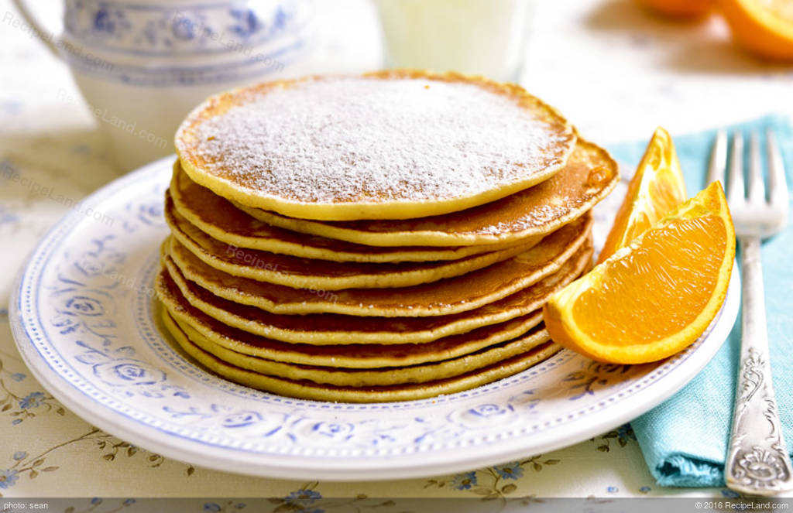

Egg White Pancakes

Description:
These pancakes are fluffy and delicious pancakes made without baking powder. This
is possible due to the use of whipped egg whites within the batter, which adds
a whole bunch of air that makes them light and delicious!
In order to make them, you are going to need an electric mixer, because whipping
egg whites to stiff peaks takes some elbow greese.
Ingredients:
- 1 cup flour
- 1/4 tsp kosher salt
- 1 cup milk
- 1 tsp vanilla
- 2 egg yolks
- 3 egg whites
- 1/4 cup sugar
Steps:
- Separate your egg whites from the egg yolks. Set the whites aside.
- In a large bowl, stir together the flour, salt, milk, vanilla, and egg yolks just until smooth.
- In a separate bowl, whip the egg whites with a hand mixer or a stand mixer on medium speed. Once the
egg whites are beginning to thicken, slowly stream the sugar into the egg whites with the mixer still
running. Beat the egg whites until they are just starting to hold stiff peaks. They will still look
glossy at this point. Note: The egg whites MUST be holding stiff peaks like the picture in the above
post. If they are not, you need to whip them longer. This is ESSENTIAL for this recipe. But don't go
too far with it. The whites will start looking dry and a little crumbly then you have gone too far with
your beating.
- Add about one quarter of the egg white mixture into the pancake batter and stir it in completely using a rubber spatula. This will lighten the batter and make it easier to fold in the rest of the whites. Add half of the remaining egg whites into the batter and gently fold the whites in, using the rubber spatula, being careful not to deflate the air out of them. Add the remaining egg whites and fold in again gently until there are no visible white streaks. If you are unfamiliar with how to fold egg whites into a batter, watch this tutorial.
- Heat a griddle or skillet over medium heat. Pour about 1/4-1/3 cup batter per cake onto the greased skillet and gently spread the batter out to a circle with the back of a spoon or measuring cup. Bubbles will still form on top even though there is no baking powder. Flip the cakes once, when the bubbles pop and the bottom is lightly browned. Cook until lightly browned on the other side. Keep warm in a 200F oven if not serving immediately.